Data Acquisition
Since working groups may ask us to get and wrangle data from some popular databases, this page serves as a guide on acquiring data from said databases! Below are some common places where groups have asked us to request from. Please feel free to add more to the growing list as we collaborate with more and more groups.
TRY Plant Trait Database
Guide
The TRY database offers a wide variety of plant trait data for many species. As of 2023, the database contains over 15 million trait records for over 300 thousand plant taxa.
1. Account Registration
To get started, first create an account on TRY. After filling out the required fields, TRY will send an email to you with your password. Log in with your email and password.

2. Terms and Conditions
After logging in for the first time, TRY will direct you to its Intellectual Property Guidelines. Scroll down and click ‘I accept’ to proceed.
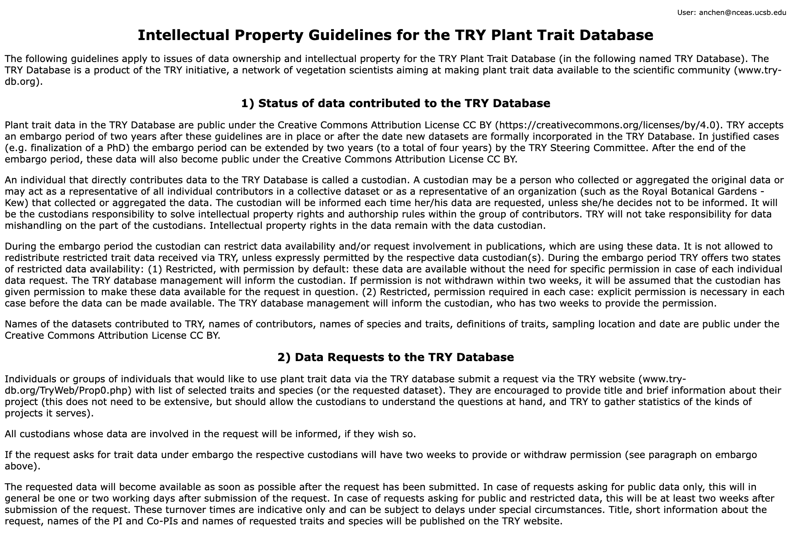
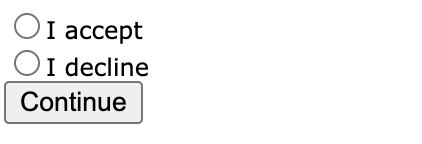
3. Start a Data Request and Select Traits
TRY will then redirect you to the Request Data page to begin a new request. This page can also be accessed by clicking “Data Portal” > “TRY Database”. The recommendation is to request by traits/species.
Then enter the numeric IDs of the traits you want data for. For example, plant height has the IDs 3106 (Plant height vegetative) and 3107 (Plant height generative).
The list of all trait IDs is here. There is also an option on the page to download a .txt file of all the traits.
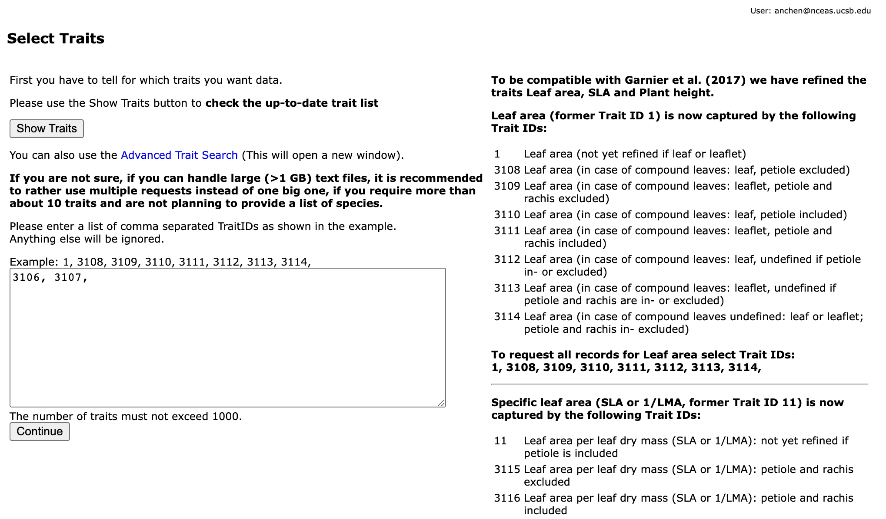
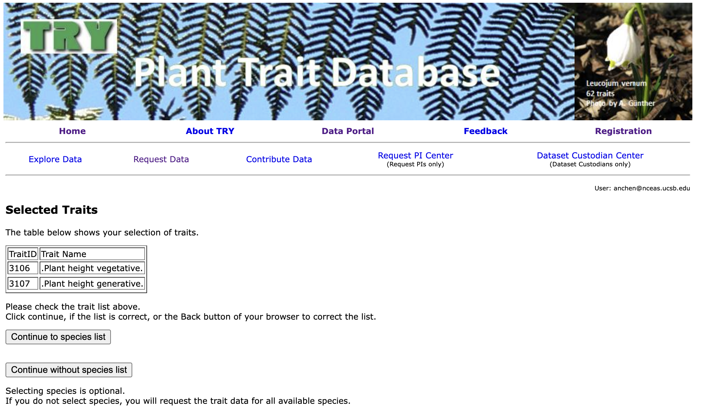
4. Select Species
Next, you will be prompted to select the species you want data for. Each species is associated with a numeric ID, so enter the desired IDs in the field below. For example, 29 represents Abies alba and 56 represents Abies lasiocarpa.
The list of all plant IDs is here. Again, you also have the option to download a .txt file of all the plant species in case you wish to get the IDs programmatically.
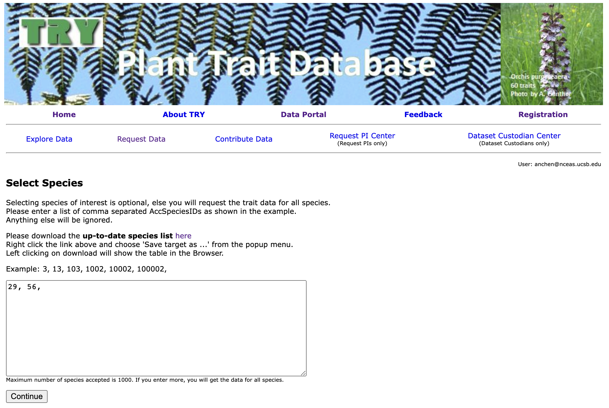
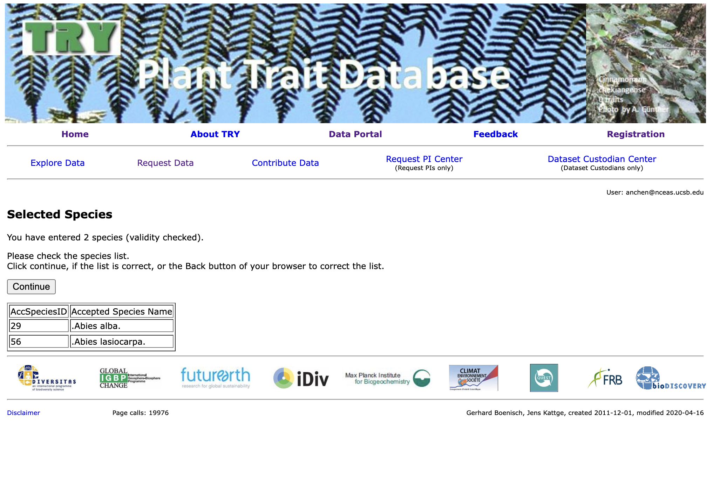
5. Choose Data Type: Public or Private
Then, you must choose whether you want to request public data or public+private data. The former option will get you the data faster, while the latter option may take up to 14 days because the dataset custodians must respond to your request.
In our previous experience, requesting public data usually gets you the data within 24 hours.
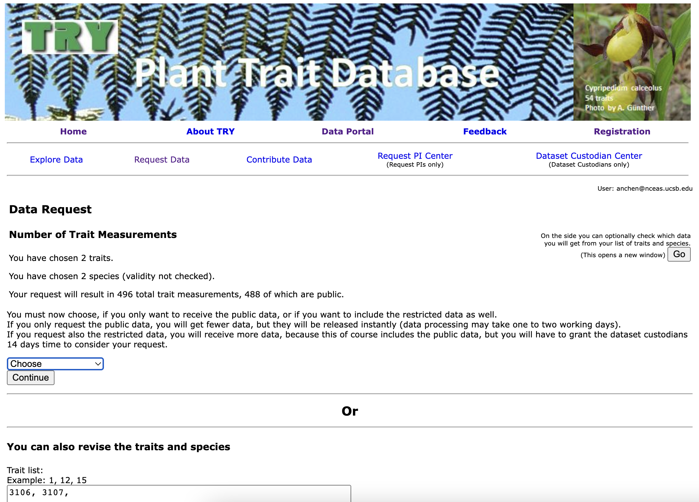
6. Describe Data Request
Once you have chosen which type of data you want, you will be prompted to enter the title and description of your project. These fields will be necessary if you requested for public+private data since the dataset custodians will need a reason to make their data available for your request.
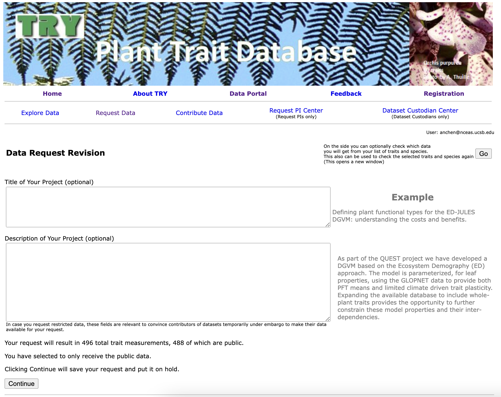
8. Finish Request and Wait
Your request is now complete! You will receive an email from TRY notifiying you that they have received your request. Wait for a subsequent email from them to get the actual download link to the data.
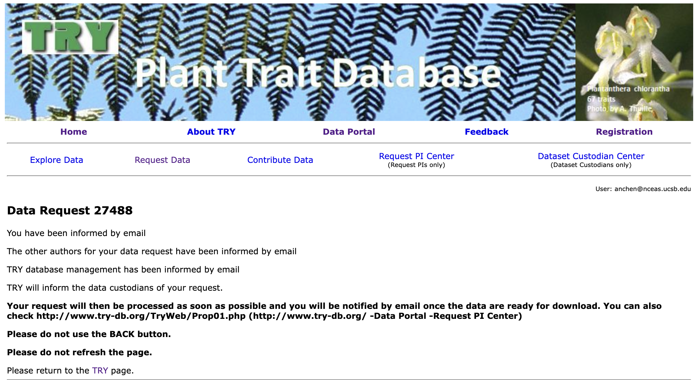
Relevant Example
See our GitHub issue #122 and the scripts in this folder for an example on how we pulled and integrated data from the TRY database.
AppEEARS
Guide
NASA’s AppEEARS (Application for Extracting and Exploring Analysis Ready Samples) platform is a useful way of extracting spatial data within a user-defined bounding box or specific points. A ton of spatial data (including MODIS datasets) are available here so it makes this portal a useful ‘one-stop shop’ for groups that want more than one spatial variable.
1. Account Registration / Sign In
To begin, visit the AppEEARS website and register for an account. After filling out the necessary personal information and confirming your email address you should be able to sign into the portal using your username and password.
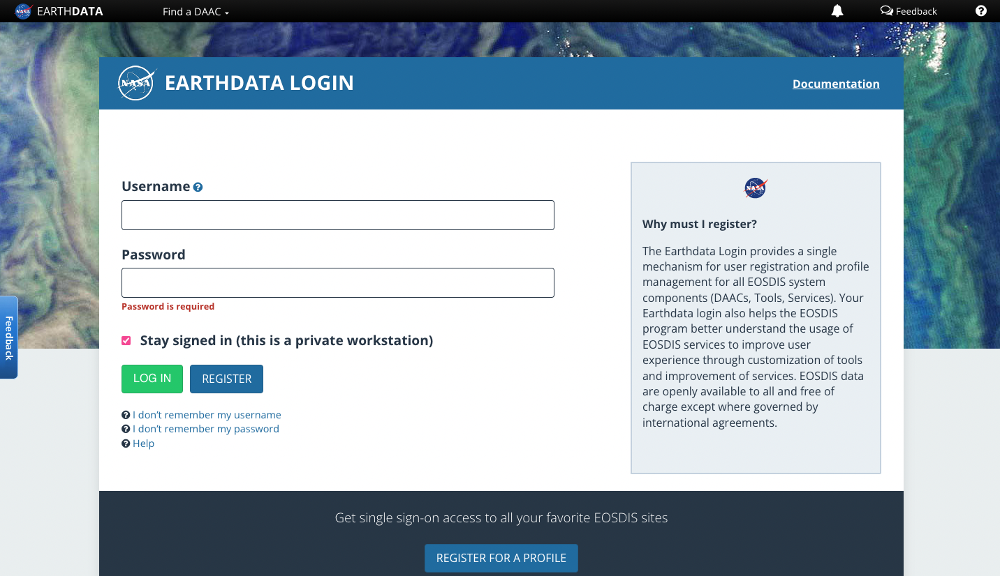
2. Begin an Extraction Request
In order to begin an extraction request, navigate to the “Extract” button in the navbar at the top of the site and click it. Select “Area” in the resulting dropdown menu of options.
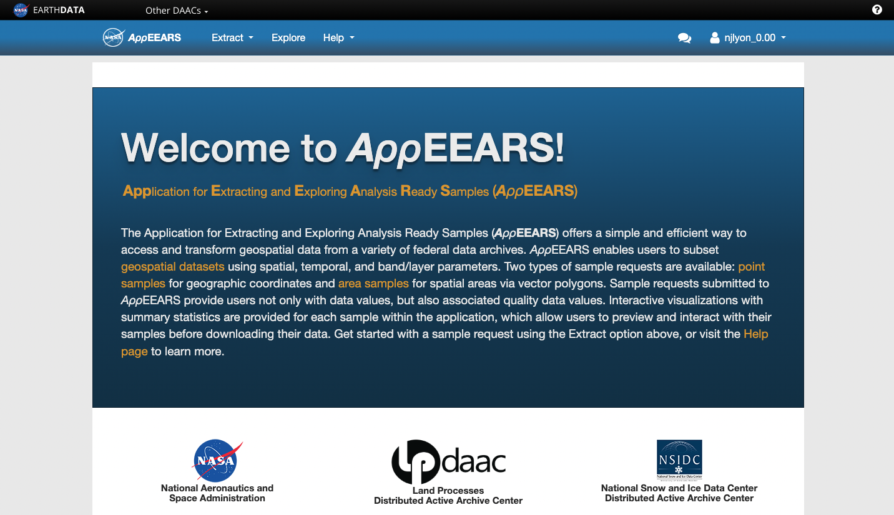
3. Pick Request Type
You can now decide whether to start your data request from scratch (“Start a new request” on the left) or if you’d like to use a previous request as a starting point (“Copy a previous request”). Note that uploading a request as a JSON is also available but I found the user interface intuitive enough that I wasn’t tempted to use this option.
The primary advantage–as I see it–of duplicating a request is that it allows you to re-use your manually-drawn bounding box. This makes multiple requests for different datasets exactly share the same area which makes the eventual harmonization of those data that much simpler.
Starting a new request is the option I take only when I haven’t previously drawn a bounding box for the area of interest.
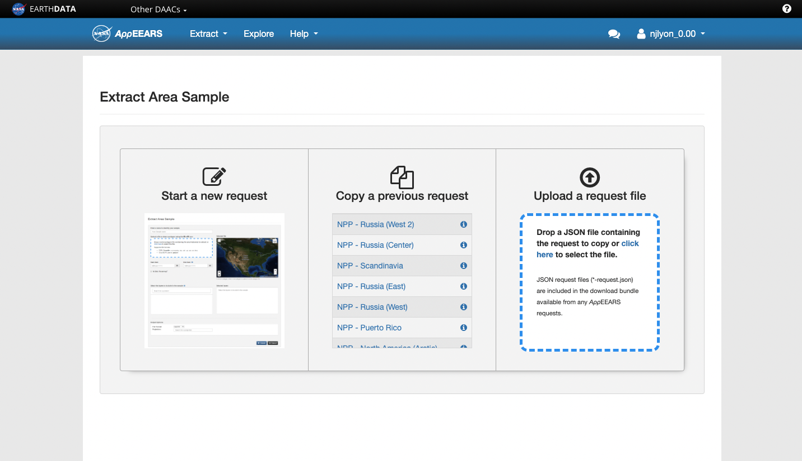
4. Fill out Request
Regardless of whether you’re starting from a blank slate or from a previous request, the next step involves customizing this request. You’ll need to perform the following steps to complete the request:
- Enter a name for this request
This name is only for your internal use so it can use your idiosyncrasies but should imply something about the data layer(s) and bounding box location to make it decipherable by others.
- Draw a polygon over your area of interest
Note that the multi-point polygon tends to result in larger data requests than a square because it overlaps more separate tiles of the source data.
- Decide on starting/ending dates
Regardless of the temporal granularity of the source data the time range requires you to specify specific days, months, and years.
- Pick data layers for that area and time range
The search field for the data layers is pretty robust and allows you to either search MODIS codes or names of the data (e.g., “snow” or “MODIS10A2”)
- Choose output file format
Your options are GeoTiff (i.e., raster) or netCDF
- Choose projection system
This option is so helpful! Specifying your projection system lets you put all of the computational labor for re-projecting into a different coordinate reference system (CRS) onto AppEEARS rather than leaving it for you to handle after the fact
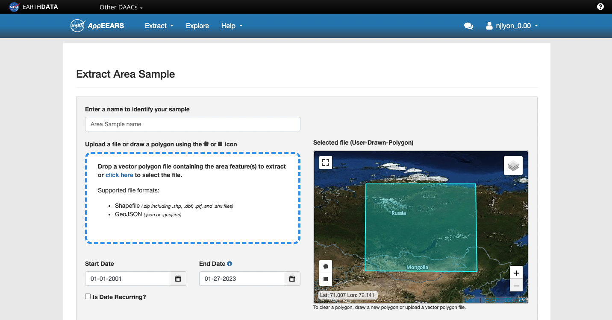 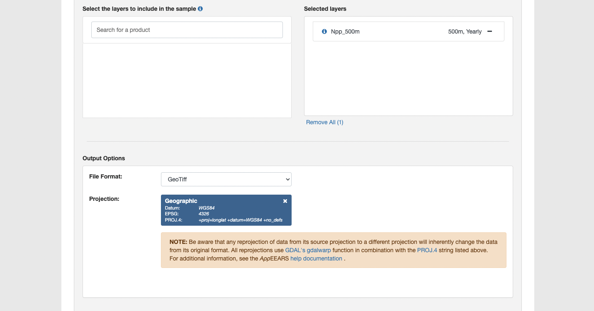
5. Submit Request
When you are ready, click “Submit” at the bottom of the request screen
If your request is at or below the data limit per request, you will receive a narrow green banner at the top of the request page notifying you of the success.
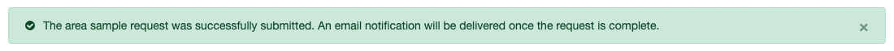
If you have requested too much data you will receive a red banner notifying you of this fact and quantifying how far over the limit your request is.
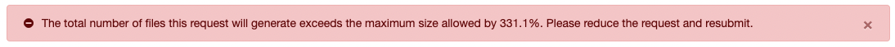
The data limit is affected by (1) the spatial extent of the request, (2) the temporal extent of the request, and (3) the number of included data layers. If you are over the limit you will need to reduce one of these parameters.
If possible, I recommend first reducing the number of data layers as duplicating a request with a shared bounding box and time range with a different data layer is really straightforward. If you need to re-draw the bounding box you’ll need to open another data request and manually draw additional bounding boxes to eventually fill out the total area of interest which can be somewhat cumbersome.
6. Download Completed Request
Moments after submitting the request successfully you will receive a “Request Received” email from AppEEARS inviting you to ‘explore’ your request. This can be safely ignored as it contains only the information that you just entered.
Some time later (usually hours if not a day or two for larger requests) you will receive a second email notifying you that the request is complete! That email has both the “Explore” link from the preceding email and a “Download” link.
Click the provided link and on the resulting AppEEARS page you can download the data your request yields onto your computer to do with what you will.
Note that requests do expire after a few weeks/months so you’ll want to download the data as soon as possible. If a request is expired and you’d like to re-request, there is a button to do exactly that but you’ll need to wait for the request to process again before being able to re-download the data.
Relevant Example
Consult the LTER Organization-owned Silica Export GitHub repository (see the README here) for an example of how we wrangled and extracted data retrieved from AppEEARS.
Of particular relevance is likely the “crop-drivers.R” script where we read in the data downloaded from AppEEARS and crop each data request to avoid the small amount of spatial overlap among requests. These requests ran into the data limit and had to be split among several requests that (slightly) overlap one another. To avoid re-sampling the same pixels, the rasters retrieved from AppEEARS each needed to be cropped slightly.
NEON
Guide
The National Ecological Observatory Network (NEON) is a facility that collects long-term ecological data from aquatic and terrestrial ecosystems in the United States. Their data usually falls into one of three categories: data collected by an airborne observation platform like LIDAR, data collected by a person in the field, or data collected by an automated sensor.
NEON has a handy API that will allow you to pull their data using R. Additionally, they have created a whole suite of tutorials for various needs, including a tutorial on how to download and explore NEON data using their helper R packages.